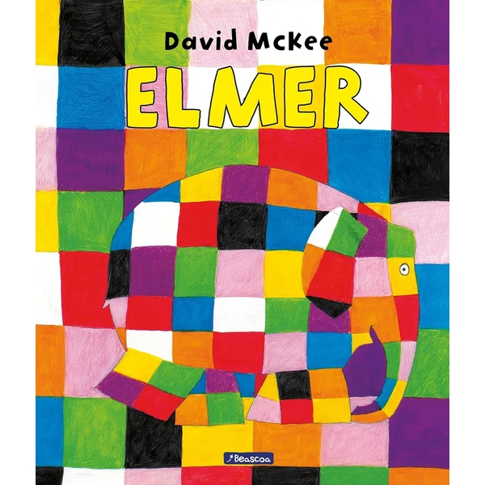
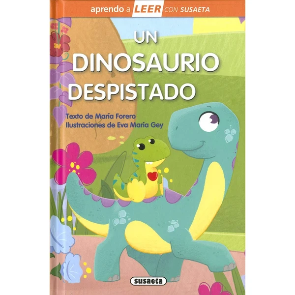
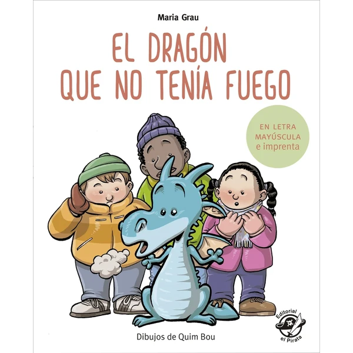
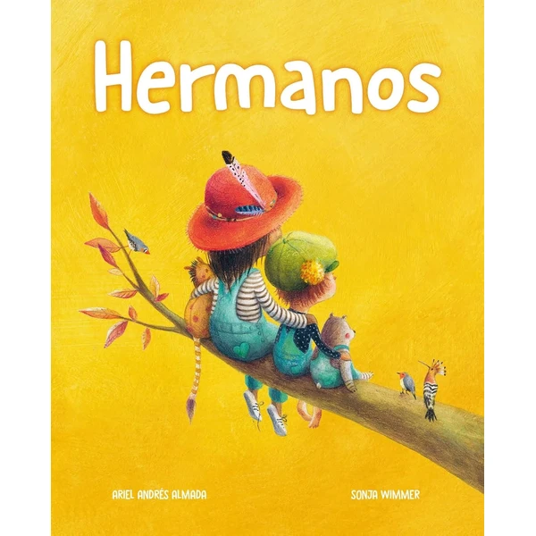
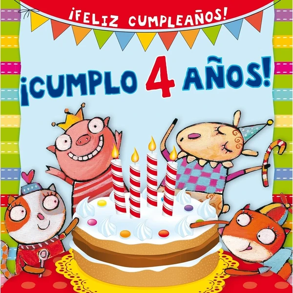
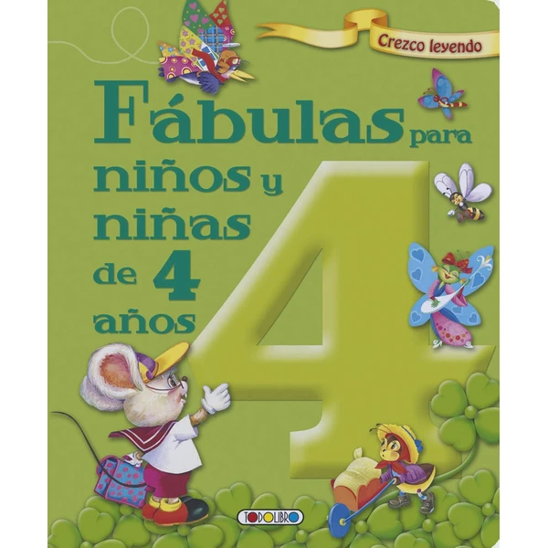

Elmer
El álbum ilustrado original sobre Elmer, el elefante de cuadros de colores que aprende a valorar lo que le hace diferente al resto de la manada.
⭐ ¿Por qué nos gusta?
- ✔ Un clásico de la literatura infantil.
- ✔ Ilustraciones de colores muy vistosas.
- ✔ Habla sobre aceptar la propia diferencia.
💬 Lo que más destacan las familias
Lo que más suele gustar es lo bien que la historia de Elmer abre la conversación sobre ser distinto sin resultar aburrida ni moralista. Las ilustraciones de colores también atrapan a los niños desde la primera página.
Ver en Amazon

El Tesoro del Pirata
Un cuento de aventuras piratas escrito en letra mayúscula y de imprenta, pensado para acompañar a los niños en sus primeros pasos con la lectura.
⭐ ¿Por qué nos gusta?
- ✔ Letra mayúscula, ideal para quien empieza a leer.
- ✔ Historia de aventuras que engancha desde el principio.
- ✔ Parte de una colección con varios títulos.
💬 Lo que más destacan las familias
Muchos padres coinciden en que la letra mayúscula ayuda mucho a que los niños reconozcan las palabras por sí solos. La historia de aventuras piratas también mantiene el interés hasta el final sin que se les haga larga.
Ver en Amazon

Un Dinosaurio Despistado
Un cuento de nivel inicial de la colección Aprendo a Leer con Susaeta, protagonizado por un dinosaurio despistado, con un texto sencillo pensado para las primeras lecturas.
⭐ ¿Por qué nos gusta?
- ✔ Nivel 0, pensado para quien empieza a leer.
- ✔ Protagonista simpático que engancha a los niños.
- ✔ Parte de una colección progresiva por niveles.
💬 Lo que más destacan las familias
Una de las cosas más comentadas es que el texto resulta accesible sin sentirse forzado, lo que da mucha confianza a quien empieza a leer solo. El protagonista despistado también hace sonreír a los niños durante la lectura.
Ver en Amazon

El Dragón que no Tenía Fuego
Un cuento sobre un dragón que no consigue echar fuego por la boca, escrito en letra mayúscula y de imprenta, de la misma colección que El Tesoro del Pirata de esta lista.
⭐ ¿Por qué nos gusta?
- ✔ Letra mayúscula, ideal para quien empieza a leer.
- ✔ Historia original y con humor.
- ✔ Combina bien con otros títulos de la colección.
💬 Lo que más destacan las familias
Los compradores valoran especialmente el toque de humor de la historia, que hace reír a los niños mientras van reconociendo las palabras. Ir sumando títulos de la misma colección también anima a seguir leyendo.
Ver en Amazon

Hermanos
Un cuento de la colección Amor de Familia centrado en la relación entre hermanos, pensado para hablar sobre los celos y el cariño que surgen al compartir la vida con un hermano.
⭐ ¿Por qué nos gusta?
- ✔ Aborda la relación entre hermanos con cercanía.
- ✔ Útil para hablar sobre celos y convivencia.
- ✔ Tono cálido, pensado para leer en familia.
💬 Lo que más destacan las familias
Entre los comentarios más habituales aparece lo útil que resulta para abrir la conversación sobre los celos entre hermanos sin que suene a sermón. El tono cercano de la historia ayuda a que los niños se sientan identificados.
Ver en Amazon

¡Cumplo 4 Años!
Un cuento de la colección Picarona pensado justo para esta edad, que acompaña la ilusión de cumplir 4 años con una historia cercana y colorida.
⭐ ¿Por qué nos gusta?
- ✔ Pensado específicamente para los 4 años.
- ✔ Ilustraciones coloridas y cercanas.
- ✔ Ideal como regalo de cumpleaños.
💬 Lo que más destacan las familias
Se repite bastante el comentario de que hace especial ilusión que la historia hable justo de cumplir 4 años, como si estuviera pensada solo para ese niño. Las ilustraciones coloridas también ayudan a que se enganchen a la lectura.
Ver en Amazon

Fábulas para Niños y Niñas de 4 Años
Una recopilación de fábulas clásicas adaptadas a esta edad, cada una con su moraleja, pensada para introducir a los niños en este tipo de relatos breves con enseñanza.
⭐ ¿Por qué nos gusta?
- ✔ Varias fábulas clásicas en un solo libro.
- ✔ Cada relato incluye su moraleja.
- ✔ Historias breves, ideales para antes de dormir.
💬 Lo que más destacan las familias
Un detalle que aparece una y otra vez es lo bien que funcionan estas fábulas como cuento para antes de dormir, al ser tan breves. La moraleja de cada relato también da pie a charlar un rato con los niños después de leerla.
Ver en Amazon